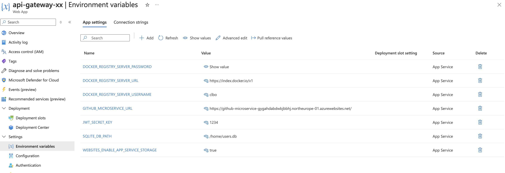
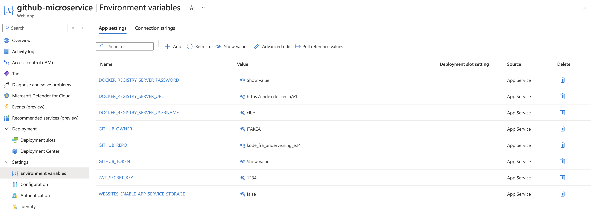

Azure Cheatsheet
Følgende kan i bruge som en slags noter eller reminders til hvad vi har været igennem i deploy sessionerne.
Free Sevices -> Azure App Service
Dette er den service i skal bruge til at oprette en web app (hvor i hoster en Microservice).
Deployment -> Deployment Center
Her opsætter vi forbindelsen til Github (Github Actions) og forbindelse DockerHub
Settings -> Environment Variables
Her tilføjes Environment variablerne.
Det er også her at variablen WEBSITES_ENABLE_APP_SERVICE_STORAGE skal sættes til true hvis vi vil bevare vores database henover gentagne deployments.
I undervisning så mine (claus) environment variabler til api-gateway sådan ud:

og til github_microservice sådan:

WEBSITES_ENABLE_APP_SERVICE_STORAGE
Hvis denne variabel sættes til true vil alle filer der ligger i Azure Web Appens /home mappe forblive liggende når vi deployer et nyt image.
Dette kan vi udnytte til at vi ligger vores database fil i denne mappe.
Det gøre ved at læser fra en miljøvariabel i vores kode DB_PATH = os.getenv('SQLITE_DB_PATH') og så lave en ny environment variabel på Azure: SQLITE_DB_PATH : /home/users.db (som beskrevet oven over).
Development Tools -> Advanced Tools -> Go -> Bash
Her kan vi gennem en terminal bruge bash kommandoer som vi lærte i starten af semesteret.
I kan blandt andet se at jeres database fil ligger i home mappen.
I skal ikke bruge denne del til andet end sjov :) .